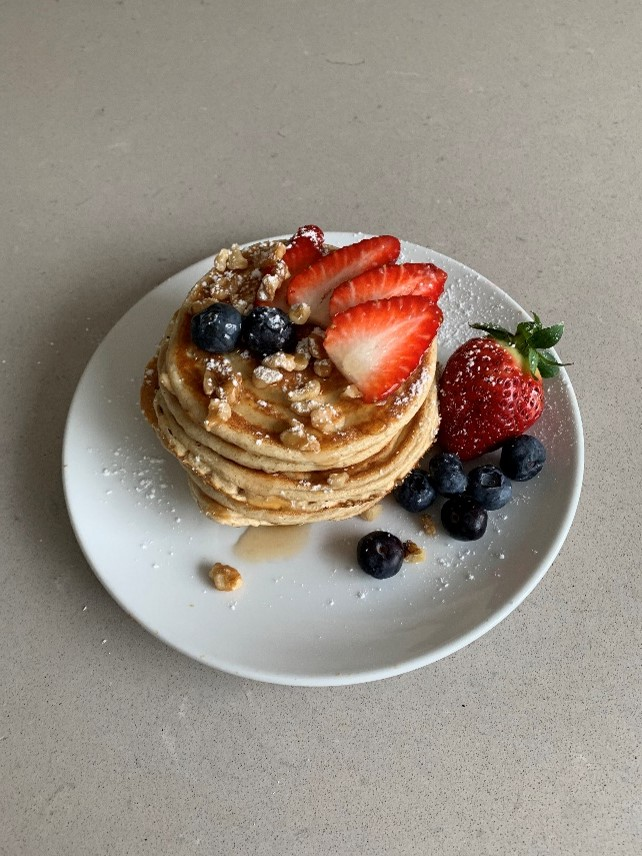
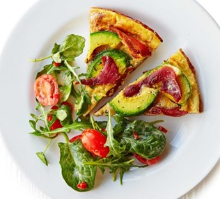
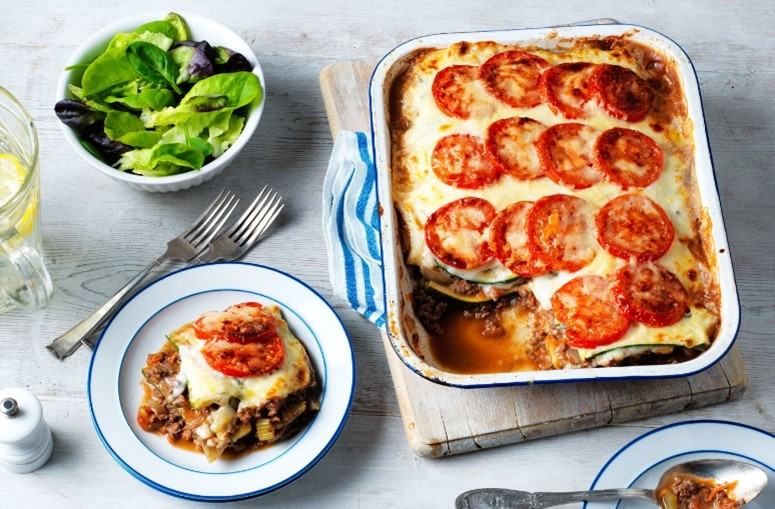
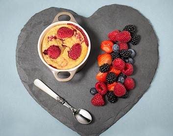

Add rest of ingredients to blender and blend until smooth.
Spray a non-stick pan with low calorie cooking spray and place over a medium heat.
Pour the mixture into the middle of the pan (makes about 6 small pancakes). Cook on one side for about 1 minute until golden brown then flip over and cook the other side.
Serve the pancakes with your favourite fresh fruit and toppings!

Bacon and Avocado Frittata
Ingredients
8 bacon medallions
3 tbsp olive oil
6 eggs
1 large avocado
2 tsp red wine vinegar
1 ½ tsp dijon mustard
1 small red chilli
200g mixed salad leaves
12 baby plum tomatoes
Nutrition
(Serves 4)
Per serving:
Calories: 467
Fat: 38g
Carbs: 7g
Protein: 22g
Instructions
Fry rashers on high heat until crispy. Roughly chop and set aside.
Warm 1 tbsp oil in the pan. Beat the eggs and then mix in the rashers and season with salt and pepper. Pour the mixture into the pan.
Cook on a low heat for 8 minutes until almost set.
Add the avocado, cut into slices.
Grill for 4 minutes.
Mix the remaining oil, finely chopped chilli, vinegar and mustard in a large bowl. Toss in the salad leaves and the tomatoes cut into halves.
Cut the frittata into wedges and serve along with the salad.

Courgette lasagne
Ingredients
500g lean minced beef
2 celery sticks
2 onions
3 garlic cloves
150ml red wine
400g chopped tomatoes
2 large carrots
400ml beef stock
550 ml low fat milk
3 tbsp cornflour
2 tsp Dijon mustard
2 large courgettes
4 vine tomatoes
20g parmesan
40g vintage cheddar
1 tsp black peppercorns
¼ tsp nutmeg
Nutrition
(Serves 6)
Per serving:
Calories: 336
Fat: 8.7g
Carbs: 28g
Protein: 20.3g
Instructions
Preheat the oven 180 degrees Celsius.
Fry mince over medium heat for 5 minutes, until golden brown. Finely chop the onions and celery.
Fry half the onions and the celery over a medium heat for 5-6 minutes and season well. Crush the garlic, add to the onions and celery and fry for a further minute. Grate the carrots and add in, along with the red wine. Simmer for 3-4 minutes.
Add the tinned tomatoes, stock and bring to the boil. Cover with lid and turn down heat and let simmer for 45 minutes, stirring occasionally. Remove lid and simmer for a further 15 minutes or until sauce has thickened.
Meanwhile, put remaining onions in a separate pan along with the peppercorns and milk (reserving 3 tbsp) and cook over a low heat. Simmer for 2-3 minutes. Remove from heat and let cool for 10 minutes.
After cooled, drain with a sieve.
Put cornflour and reserved milk in a small bowl and whisk until a thick paste is formed. Then add to the strained milk and simmer over low heat for 5 minutes. Add the mustard and ground nutmeg and season with salt and pepper
Cut courgette into thin slices lengthways. Blanch in hot water for 1 minute.
Spread half the mince mixture out in a lasagne dish. Layer half the courgette slices on top.
Repeat step 9.
Pour white sauce over top. Slice tomatoes and place on top of white sauce. Grate the cheddar and parmesan cheese and sprinkle on top.
Bake for 30 minutes.
Cut into six slices and serve with a side salad.

Baked Oats
Ingredients
1 tsp sweetener of choice
1 small egg
40g oats
100g non-fat Greek yoghurt
100g raspberries
Nutrition
(Serves 1)
Per serving:
Calories: 294
Fat: 7.3g
Carbs: 32g
Protein: 20.9
Instructions
Preheat oven to 180 degrees Celsius.
Combine all ingredients in a mixing bowl.
Transfer to small, ovenproof dish.
Bake for about 35 minutes until golden brown.
Serve with your favourite toppings.

Protein Mug Brownie
Ingredients
1 scoop chocolate protein powder
1 large egg
1 tbsp coconut flour
2 tbsp sweetener of choice
½ teaspoon baking powder
1.5 tbsp cocoa powder
¼ cup skim milk
1 tbsp chocolate chips
Nutrition
(Serves 6)
Per serving:
Calories: 336
Fat: 8.7g
Carbs: 28g
Protein: 20.3g
Instructions
Preheat the oven 180 degrees Celsius.
Fry mince over medium heat for 5 minutes, until golden brown. Finely chop the onions and celery.
Fry half the onions and the celery over a medium heat for 5-6 minutes and season well. Crush the garlic, add to the onions and celery and fry for a further minute. Grate the carrots and add in, along with the red wine. Simmer for 3-4 minutes.
Add the tinned tomatoes, stock and bring to the boil. Cover with lid and turn down heat and let simmer for 45 minutes, stirring occasionally. Remove lid and simmer for a further 15 minutes or until sauce has thickened.
Meanwhile, put remaining onions in a separate pan along with the peppercorns and milk (reserving 3 tbsp) and cook over a low heat. Simmer for 2-3 minutes. Remove from heat and let cool for 10 minutes.
After cooled, drain with a sieve.
Put cornflour and reserved milk in a small bowl and whisk until a thick paste is formed. Then add to the strained milk and simmer over low heat for 5 minutes. Add the mustard and ground nutmeg and season with salt and pepper
Cut courgette into thin slices lengthways. Blanch in hot water for 1 minute.
Spread half the mince mixture out in a lasagne dish. Layer half the courgette slices on top.
Repeat step 9.
Pour white sauce over top. Slice tomatoes and place on top of white sauce. Grate the cheddar and parmesan cheese and sprinkle on top.